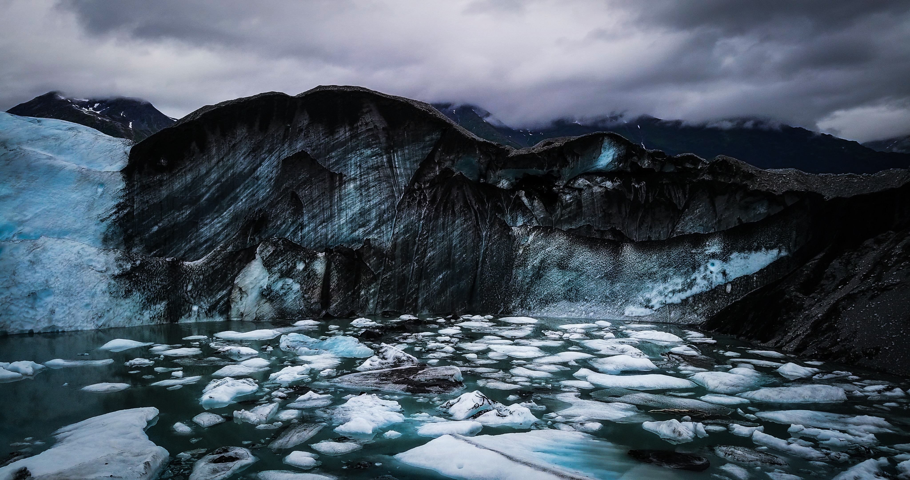

10 Interesting facts about Alaska
- Alaska's nickname is the last frontier
- It is home to 3 million lakes and 3,000 rivers!
-
It's home to the tallest mountain in the world, from base to peak!
(don't believe me? click here)
- And has more coastline than the rest of the U.S. combined!
- Alaska has an estimated 100,000 glaciers that make up about 5% of Alaska
- The Northern Lights can be seen on average more than 200 days per year
- Has one of the world's largest tides, which rises 35 feet
- The lowest temperature ever recorded was -80 degrees and the highest was 100 degrees
- Curt Schilling, Jewel, Carlos Boozer, and actress Holly Madison were raised in Alaska
- 98% of America's brown bears live in Alaska
If you want more facts click here

State Comparisons
| State |
Population |
Area |
| Alaska |
733,583 people |
665,400 square miles |
| California |
39 million people |
163,696 square miles |
| Texas |
30 million people |
268,597 square miles |
| Montana |
1.1 million people |
147,040 square miles |